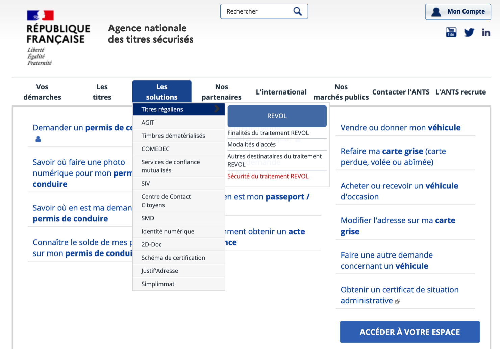
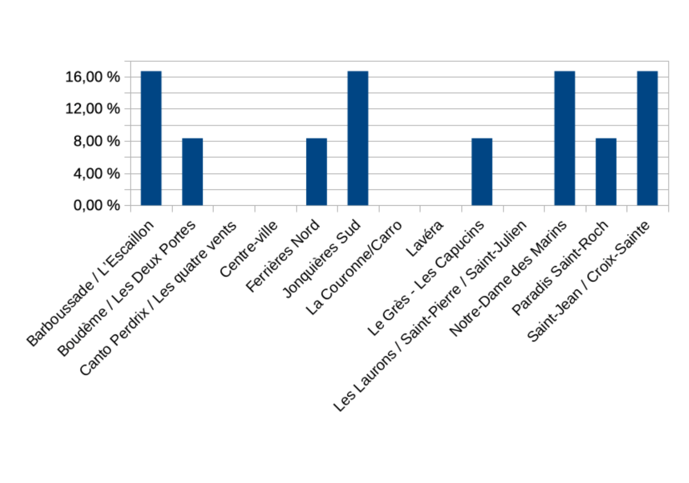
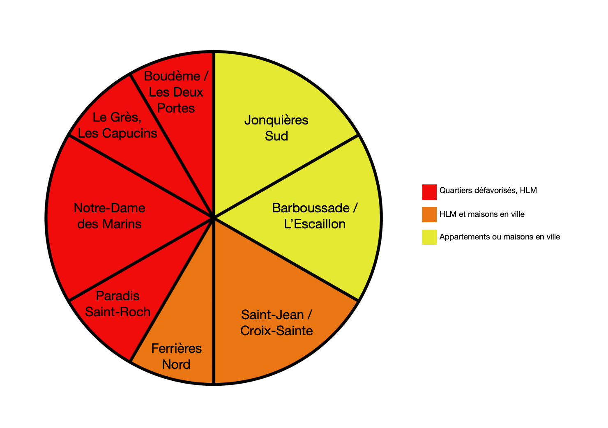
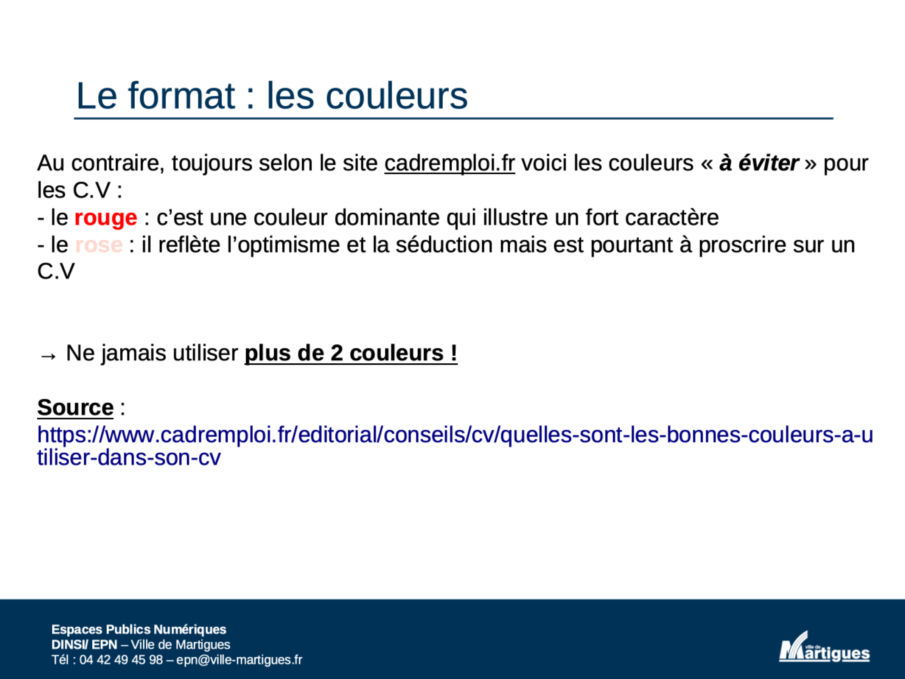
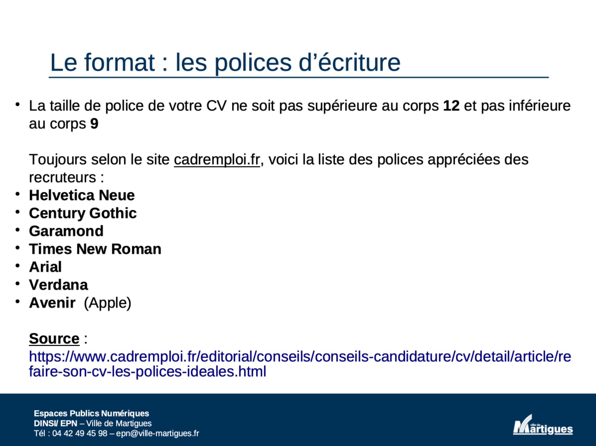

Notre thème et notre sujet
Le sujet que nous choisissons d’aborder est intimement lié au grand thème de la fracture numérique. Il s’agit de décrire les inégalités relatives à l’accès et à l’utilisation des Technologies de l’Information et de la Communication (TIC). Il existe de nombreuses typologies de la fracture numérique, et on parle d’ailleurs plus souvent de « fractures numériques » : fracture de premier et de second degré (respectivement, liée aux capacités d’accès et d’utilisation des outils numériques) ; fracture intergénérationnelle, géographique, économique ou sociale. Dans le cadre de notre exploration, nous étudierons les deux degrés de la fracture numérique, à travers le prisme de la fracture sociale liée au numérique.
Il est toutefois difficile de rendre compte de cette fracture sans entrer directement au contact des personnes qui la vivent au quotidien. C’est pour cela que notre exploration se base sur un exemple très précis, qui est celui des Espaces Publics Numériques (EPN) de la ville de Martigues, une ville de 50 000 habitants du département Bouches-du-Rhône. Ces structures accueillent des publics dont les niveaux de maîtrise des outils numériques sont très hétérogènes, et leur offrent un accompagnement en fonction de leurs besoins. Cela peut aller d’une assistance dans la réalisation de démarches administratives en ligne à la découverte de nouveaux usages dans des ateliers, en passant par de la sensibilisation aux enjeux du numérique. Et afin de préciser encore davantage notre exploration, nous avons choisi de nous concentrer sur un atelier en particulier, qui propose à des jeunes en difficulté professionnelle d’acquérir des clés supplémentaires pour les aider à se réinsérer.
La fracture numérique est un sujet qui existe, de fait, depuis le début de la démocratisation des équipements numériques, qui a pris un tournant important avec la diffusion du World Wide Web en 1991. Mais elle s’est intensifiée au fur et à mesure que les équipements se sont diversifiés, avec des politiques de dématérialisation des services publics dès le début des années 2000 - soit la possibilité d'effectuer les démarches liées à ces services via des sites Web. D’autant plus que la pandémie de Covid-19 a requis d’une grande partie de la population une utilisation accrue des outils du numérique.
Ce thème revêt donc un caractère particulièrement urgent aujourd’hui, car les inégalités se diversifient avec les usages. Notre exploration, éclairée par le contexte global de la dématérialisation en France, nous permettra non seulement de déterminer qui sont les jeunes exclus du numérique, mais aussi de mieux comprendre ce qui est attendu d’eux dans le cadre d’une réinsertion professionnelle – et leur attitude face à ces attendus.
Notre problématique
Grâce au cas concret des ateliers de réinsertion professionnelle des jeunes dans les EPN de Martigues, nous nous poserons la question suivante :
Comment s'expriment les difficultés créées par la fracture sociale liée au numérique ?
Nos 3 angles
Nous avons dégagé trois grands angles d’attaque, qui ont pour but de montrer que la fracture sociale liée au numérique admet plusieurs facettes différentes :
- D’abord, nous aborderons le contexte de dématérialisation en France (au niveau légal et administratif) qui entraîne une injonction au numérique et pousse des publics à avoir besoin d'aide.
- Ensuite, nous nous intéresserons aux jeunes qui fréquentent les EPN de Martigues et qui constituent le public des ateliers de réinsertion, grâce à l'analyse détaillée de leur origine sociale.
- Enfin, nous étudierons les ateliers tenus par les EPN de Martigues, les codes du numérique nécessaires pour une réinsertion professionnelle mais aussi les réactions des publics face à ces attendus.
Le statut légal de la dématérialisation en France
En France, plusieurs lois régissent la dématérialisation des services publics. Ce processus a démarré avec le projet Copernic (2001-2009), qui visait à moderniser l'administration fiscale grâce aux outils du numérique.
Depuis, les ambitions des institutions ont continuellement augmenté, à tel point qu'en 2017, le secrétaire d'État au Numérique, Mounir Mahjoubi, annonçait vouloir "100% de démarches administratives numérisées à l’horizon 2022" dans le cadre du programme "Action Publique 2022". Cet objectif doit s'accompagner d'une optimisation des services numériques, qui permettraient alors de repenser les méthodes de l'administration et ses relations avec les citoyens. C'est d'ailleurs l'esprit du Plan Préfectures Nouvelles Générations (PPNG) mis en place dès 2015, qui avait notamment permis d'effectuer via des sites Web une partie voire l'intégralité des démarches relatives aux titres sécurisés.
Or ce processus ne va pas nécessairement de pair avec un accompagnement. Ainsi, le "100% de démarches administratives en ligne" se comprend également comme une diminution drastique des possibilités pour les effectuer avec des conseillers, dans des lieux spécialisés tels que les agences. C'est par exemple le cas du paiement des impôts, qui ne peut s'effectuer en présence que dans des établissements affiliés à un réseau de partenaires du Ministère des Finances publiques.
Un exemple de la dématérialisation des services : Pôle Emploi
Le domaine de l’emploi est lui aussi touché par la dématérialisation. Outre la généralisation des CV au format numérique et, plus récemment, l'essor du télétravail et du "distanciel" avec la pandémie, les inscriptions administratives sur Pôle Emploi et les demandes d’allocation s'effectuent exclusivement en ligne depuis 2016. Cela signifie qu'il existe beaucoup moins de possibilités pour recevoir de l'aide en agence pour effectuer certaines démarches. Un déplacement en agence n'est plus requis que pour s'entretenir directement avec un conseiller, par exemple dans le cadre d'une première inscription ; le suivi personnalisé se fait majoritairement par un espace de communication en ligne, sur le site de Pôle Emploi.
Cela ne semble toutefois pas créer de difficultés au premier abord. D’après une enquête téléphonique réalisée auprès des usagers de la plateforme en ligne en 2016 et dont les résultats ont été publiés en septembre 2017, 84% des demandeurs d’emploi estiment que l’inscription en ligne est "facile". Par ailleurs, 81% ont pu réaliser cette inscription sans avoir besoin de se rendre en agence pour demander des conseils ; des tutoriels en ligne ont été diffusés, et des conseillers restent disponibles par téléphone pour aider les demandeurs d'emploi.
Même si ce résultat semble d’abord optimiste, il reste une zone d’ombre. En effet, même en ne remettant pas en question les chiffres obtenus par Pôle Emploi, il reste 16% du public qui fait face à des difficultés lors de démarches à effectuer sur leur site Web. Rapportés aux chiffres du chômage en 2021, ces 16% représentent près d'un million de personnes... Des conclusions similaires peuvent être tirées de l'analyse des 81% de demandeurs d'emploi capables d'effectuer les démarches sans se rendre en agence : les 19% restants ont toujours besoin de l'aide d'un conseiller pour effectuer les démarches avec eux. Et cela, alors même qu'ils ne peuvent se faire aider en agence que par "un jeune en service civique".
Conséquences : une injonction au numérique, une fracture sociale, une réponse nécessaire
Il existe plusieurs raisons de parler d'une "injonction au numérique", soit d'obligation pour les services publics et les usagers de se conformer voire de se restreindre aux usages numériques, pour qualifier les politiques de dématérisalisation des démarches administratives en France. L'une des plus évidentes au premier abord est la difficulté à manipuler les sites hébergeant des démarches dématérialisées. Un exemple est celui de l'Agence Nationale des Titres Sécurisés (ANTS), auquel les usagers reprochent souvent d'être peu intuitif : en 2021, soit plusieurs années après son lancement, il est toujours jugé insatisfaisant par une grande partie de ses utilisateurs (avec une note de 1,1/5 sur le site Trustpilot, qui met en place des sondages d'évaluation de sites Internet). Cela montre bien que l'accent est mis non pas sur les services rendus à l'utilisateur, mais bien sur l'objectif même de dématérialiser les services.

Une conséquence de cette injonction est une importante fracture sociale. La population française est divisée entre les personnes qui savent utiliser les outils numériques et celles qui en sont exclues, en raison d'un manque d'équipements et/ou de connaissances relatives au numérique. Et la conséquence de cette différence est l'apparition de nouvelles inégalités liées au numérique : à un manque de compétences ou d'outils viennent s'ajouter les difficultés à effectuer des démarches en ligne, alors même qu'elles revêtent de plus en plus un caractère obligatoire.
Face à cette fracture, il est primordial pour ces personnes d'accéder à un accompagnement. Celui-ci est assuré notamment par des structures d'accueil du public, faisant partie d'un tissu associatif et de services publics. Ainsi, les Espaces Publics Numériques (EPN) sont des structures dépendant des municipalités, où les personnes en difficulté peuvent être assistées dans leur utilisation des outils numériques.
Focus sur la médiation numérique
La médiation numérique a été définie lors des premières Assises nationales éponymes en 2011. Elle est à la fois un métier et une fonction proposant d’apporter des clés de compréhension et d’usage à la population au sujet des outils numériques, afin que chaque individu puisse faire des choix éclairés. À travers l'accueil, l'assistance et l'accompagnement des publics aux usages numériques, elle suit une démarche proche de celle de l'éducation populaire - l'accès au savoir par toutes et tous. Les personnes qui l'exercent (dans les EPN ou ailleurs) sont appelées médiateurs.trices numériques.
Précisions sur les "jeunes"
Afin de donner un cadre précis à notre exploration et afin de se conformer à celui des ateliers de réinsertion proposés par les EPN de Martigues, nous nous sommes intéressés aux "jeunes", qui ne sont pas souvent évoqués lorsque l'on parle d'exclus du numérique. Là où, dans l'imaginaire commun, les personnes âgées sont davantage vues comme distanciées du numérique alors que les jeunes y sont tous pleinement intégrés, la situation que nous étudions prouve que les jeunes rencontrent aussi ce type de problèmes en fonction de paramètres tels que le milieu social. Nous n'abordons donc pas la question de la fracture intergénérationnelle.
Nous avons déterminé l'âge du public « jeunes » en fonction de catégories déjà utilisées dans le cadre de sondages pour les EPN de Martigues. Les jeunes sont donc, dans ce cadre, tous les individus âgés de moins de 18 ans jusqu’à 24 ans. Il est néanmoins possible de déduire, compte tenu des réponses apportées par les moins de 18 ans, qu'il n'y a pas de participants en-dessous d'un niveau de lycée.
L'influence du milieu social des jeunes sur la fracture numérique à Martigues
Grâce à un sondage réalisé en mai 2021 parmi les usagers des EPN de la ville de Martigues, nous avons essayé de voir quelle importance le milieu social avait dans la fracture numérique chez les jeunes. Ce graphique a donc été réalisé à partir des données recueillies chez les jeunes tels que définis précédemment (<18 ans - 24 ans), parmi un public qui déclare fréquenter les EPN.


Lorsque nous regardons d’abord la répartition par quartiers (Graphique 1), il semble au premier abord que le public de jeunes qui se rend aux EPN soit assez hétérogène en termes de quartiers d'origine. Cependant lorsque l’on regroupe les différents quartiers selon le niveau de vie (Graphique 2), il apparaît que 41,66% des bénéficiaires jeunes viennent des quartiers les plus défavorisés. En revanche, les jeunes du centre-ville et des quartiers les plus favorisés (comme La Couronne/Carro ou Les Laurons/Saint-Pierre/Saint-Julien) ne semblent pas faire partie des exclus du numérique.
Il faut tout de même relativiser ces résultats. Le sondage n’est pas représentatif de l'intégralité de la population martégale et ne prend pas forcément en compte les exclus du numérique « invisibles ». Nous admettons qu'une partie des exclus ne se rendent pas dans les EPN pour solliciter de l’aide : ils ne sont donc pas répertoriés dans le sondage. Une recherche plus approfondie pour aller directement au contact des personnes qui ont besoin d'aide permettrait probablement d'obtenir un sondage plus fidèle à la réalité de l'exclusion du numérique à Martigues, avec des résultats différents.
Des victimes de la fracture sociale liée au numérique ?
Les résultats de ce sondage permettent d'éclairer un point important : les exclus du numérique sont souvent présentés comme des victimes de la fracture numérique. Une notion qu'il semble important de clarifier : une victime est, selon le dictionnaire Larousse, une personne qui pâtit, qui subit les effets d'une situation, d'événements. Cependant, déterminer qu’une personne est une victime n’est peut-être pas aussi simple qu’il n’y paraît. En effet, ce statut peut être défini d’un point de vue extérieur, mais aussi intérieur.
Par exemple, lorsque l’on constate que certaines personnes dans des situations d’inégalités sociales n'ont pas accès aux TIC ou ne les maîtrisent pas, elles peuvent être placées d’un point de vue extérieur dans une situation où elles sont des victimes de la fracture numérique. Les EPN semblent donc être là pour aider les « victimes de la fracture numérique ». Or, ces personnes, malgré leur exclusion numérique, ne se perçoivent pas obligatoirement comme des victimes. En effet l’impression de subir de façon passive la fracture numérique ne correspond pas forcément à la réalité des individus concernés. Surtout lorsqu’ils sollicitent activement des EPN pour faire des démarches pour trouver un emploi.
Il est aussi intéressant de constater qu’il existe aussi certaines personnes qui décident de ne pas recourir aux TIC de façon délibérée. Leur non-désir d’utiliser les TIC ne leur donne pas pour autant un statut de victime. La fracture numérique, qui est une situation d’inégalité, n’implique pas automatiquement que les « moins favorisés » soient des victimes.
Le cadre de l’accompagnement
L’accompagnement se déroule à travers plusieurs sessions, lors desquelles les jeunes vont d’abord être sensibilisés par une équipe de médiateurs numériques à l’utilisation d’un ordinateur et aux usages d’Internet, avant d’apprendre à concevoir et publier un CV qui répond aux exigences des recruteurs grâce aux outils du numérique.
Dans un premier temps, les jeunes passent le premier niveau du PIX, un test qui permet aux médiateurs de se rendre compte de leur niveau de maîtrise de tâches simples sur un ordinateur (ouvrir un fichier, envoyer un e-mail, effectuer une recherche sur un moteur de recherche…), et ainsi d’orienter les premiers temps de l’accompagnement pour s’assurer que ces tâches sont acquises. Ce premier temps se fait le plus souvent en plusieurs séances (une dédiée aux ordinateurs en général et aux logiciels de mise en page, et une autre à Internet).
Le second temps – celui qui nous intéresse le plus dans le cadre de notre exploration – est celui de l’accompagnement à la réalisation du CV. Tout d’abord, les jeunes sont invités à assister à une présentation où les médiateurs discutent avec eux des composantes du CV et des manières propres au numérique de le rendre efficace, attirant et visible par les recruteurs via Internet. Ensuite, ils vont réviser eux-mêmes leurs CV en fonction de ce qu’ils ont appris, assistés par les médiateurs lorsqu’ils ont besoin d’aide sur des points particuliers.
Les attendus d’un "bon" CV
La présentation qui précède la réalisation du CV présente aux jeunes de nombreux outils pour créer un CV en ligne (comme Canva ou CVDesignr) et pour le diffuser à un grand nombre de recruteurs (avec des réseaux sociaux comme LinkedIn ou Facebook, sur les sites des entreprises d’intérim ou encore d’autres réseaux comme Pinterest). Il y a aussi une partie de rappel des éléments de fond à trouver sur un CV.
Mais la forme donnée au contenu du CV occupe également une place très importante dans la formation, notamment sur 2 angles :
- Les couleurs utilisées. Là où certaines couleurs sont très valorisées pour les qualités positives qu’elles induisent (comme le bleu, le vert ou le jaune, qui représentent respectivement la sérénité, l’espoir et la luminosité), d’autres sont à proscrire pour les mêmes raisons (le rouge montre un danger, et le rose est synonyme de séduction : deux choses qui n’ont pas leur place sur un CV, qui devrait mettre le recruteur en confiance). L’accent est aussi mis sur le nombre des couleurs : plus de 2 couleurs perturbent la lecture du CV, le regard est détourné du contenu.
- Le choix des polices d’écriture. Les recruteurs apprécient particulièrement des polices faciles à lire car aérées et sans trop de fioritures. C’est le cas d’Helvetica Neue, Times New Roman, Garamond ou Verdana. Mais d’autres sont à éviter, telles que Comic Sans MS qui distrait par son caractère peu sérieux. Aussi, il est important de vérifier les tailles de polices pour les corps de textes : pas plus de 12, pas moins de 9 pour accéder lisiblement à toutes les informations.


Ces aspects sont très importants dans le cadre de l’analyse des changements liés au numérique. L’élargissement des possibilités de mise en page ont rendu possible de choisir parmi des milliers de polices d’écriture et des millions de couleurs différentes. Mais il est intéressant de constater que seules certaines sont valorisées par les recruteurs en fonction de ce qu’elles reflètent sur la personne qui recherche un emploi et sur ses motivations. Le site auquel il est fait référence rend compte des « tendances » principales utilisées sur des CV qui ont eu du succès sur le marché de l’emploi. L’objectif est donc bien de permettre aux jeunes d’accéder à ces « codes » et de leur faire comprendre pourquoi ils sont plus efficaces que leurs CV originaux afin de leur donner plus de chances dans leurs recherches d’emplois.
Les réactions des jeunes face aux codes transmis dans les ateliers
D’abord, une grande partie ne semble pas comprendre dès le départ les tenants et les aboutissants des codes appréciés par les recruteurs. La présentation étant tournée de manière interactive afin d’encourager la participation des jeunes, ils sont très peu à deviner tout de suite l’intérêt visuel de mettre des couleurs dans un CV – et demandent aux médiateurs de le ré-expliquer à plusieurs reprises. Il y a très souvent une réaction de surprise lorsque les médiateurs évoquent les symboliques des couleurs « positives », alors que le rouge est perçu normalement comme la couleur du danger.
Ensuite, quelques jeunes s’interrogent sur l’intérêt même de produire un CV au format numérique, alors qu’ils le possèdent déjà en format papier – rédigé à la main. Même si ce questionnement a tendance à s’amenuiser à l’évocation des outils en ligne qui simplifient la création et l’édition, le fait de devoir passer par un ordinateur pour produire un document qu’ils ont déjà sous un autre format recouvre parfois un caractère repoussant. Et cela, même si les onglets à remplir sont les mêmes que ceux d’un CV ordinaire.
Enfin, dans le cadre de la réalisation, les manipulations techniques sont assez contraignantes. Nous avons pu remarquer assez rapidement des difficultés à effectuer des actions simples. Taper des caractères à l’aide d’un clavier, ouvrir un logiciel de traitement de texte ou simplement cliquer sur une souris sont loin d’être des évidences pour ces publics. Chez certains jeunes, il y avait même une certaine appréhension à entrer en contact avec les équipements. Alors qu’ils savaient très bien manipuler les écrans tactiles de leurs téléphones, qu’ils utilisent quotidiennement, quelques-uns craignaient de toucher la mollette de la souris ou de cliquer sur la croix rouge de fermeture d’une fenêtre, par peur de créer un dysfonctionnement de l’ordinateur.
Des jeunes en situation d'illectronisme ?
Ces réactions sont des conséquences logiques de ce qui est remarqué dans la majorité des cas dès le début des sessions, avec le test PIX : ces jeunes sont pour beaucoup en situation d’illectronisme. Pour comprendre cette notion, on peut faire un parallèle avec l’illettrisme (dont le mot « illectronisme » est directement dérivé) afin de le définir comme un ensemble de lacunes dans la maîtrise des outils numériques, même les plus simples (traitement de texte, recherches Internet). Ainsi, ces jeunes sont placés face à une situation où une aide extérieure est le seul moyen de faire face aux impératifs de la dématérialisation. Et selon un ensemble d’études synthétisées par Nadia Kesteman, membre de la direction du département de recherches de la Caisse nationale d’Allocations Familiales, l’illectronisme touche en particulier les jeunes. Les EPN de Martigues, à travers ces sessions, montrent bien la réalité de l’illectronisme avec des jeunes sans repères face aux outils numériques.